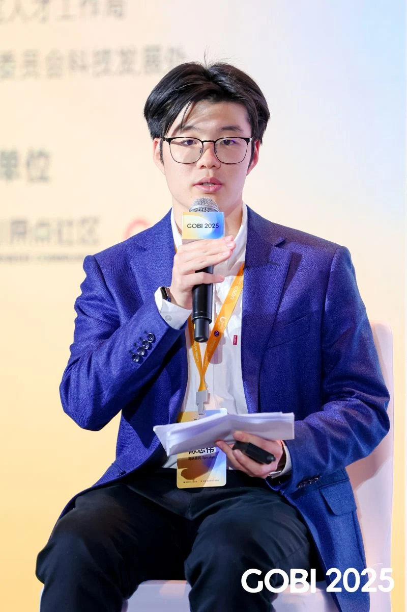
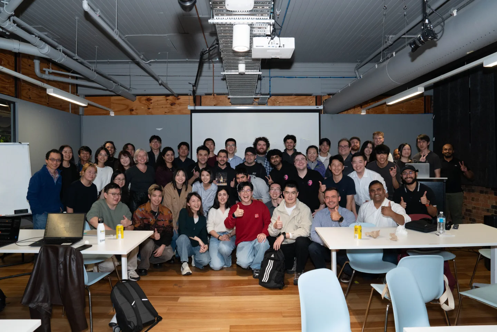
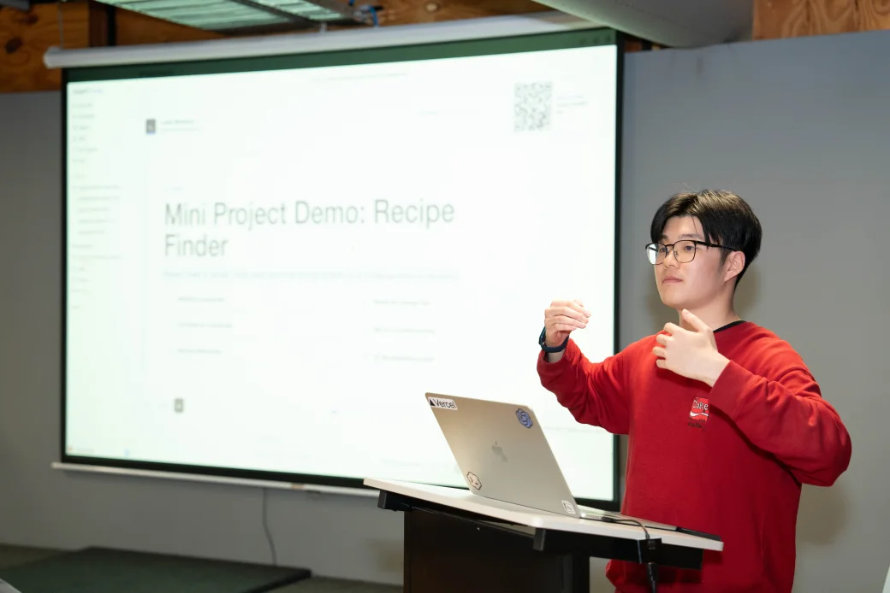

Exploring Use of Conversational AI to Investigate Maintenance Problems: Insights from an Early Deployment in a Mining Organisation
Zhiwei Chen and Dhaval Vyas OzCHI 2026
Zhiwei Chen Researcher Brisbane, Australia
I study how people use conversational AI responsibly and effectively.
View research
Zhiwei Chen and Dhaval Vyas OzCHI 2026
Zhiwei Chen Journal of Economics, Finance and Accounting Studies 2022
PaperI help lead Brisbane’s Codex community, hosting hands-on workshops, build nights, and demos.
OpenAI Developer Community

I founded a global youth innovation community connecting emerging leaders across research, careers, and entrepreneurship.
Visit Boundless Youth ForumA conversational analytics tool that helps mining teams investigate fleet maintenance problems.
A silent demo of a fleet maintenance workspace. The assistant compares day- and night-shift issues. Filtering for hydraulic events opens results in tables and charts, with a monthly trend and heatmap in the analytics view.
I helped design and test workflows for investigating downtime, maintenance events, and component issues.
Stack React · FastAPI · Azure OpenAI · Azure SQL
An open-source AI workspace for asking questions about markets and checking the evidence behind the answers.
Stack Next.js · FastAPI · PydanticAI · SQLite · AkShare
A low-poly browser game where you explore a Brisbane-inspired riverfront park and record wildlife discoveries in a field journal.
Stack JavaScript · Three.js · WebGL · Vite
Play Brisbane GoMara explores a low-poly park by the Brisbane River and follows an ibis over fallen logs. She uses the field lens to photograph an Australian white ibis and records the discovery in her wildlife journal. The trailer ends with the address brisbanego.online.
Hi, I’m Peter. I research how people can interact effectively with AI, and I build AI systems that solve real operational problems. I also lead tech community events and developer groups.
For research collaborations, talks, and workshops.